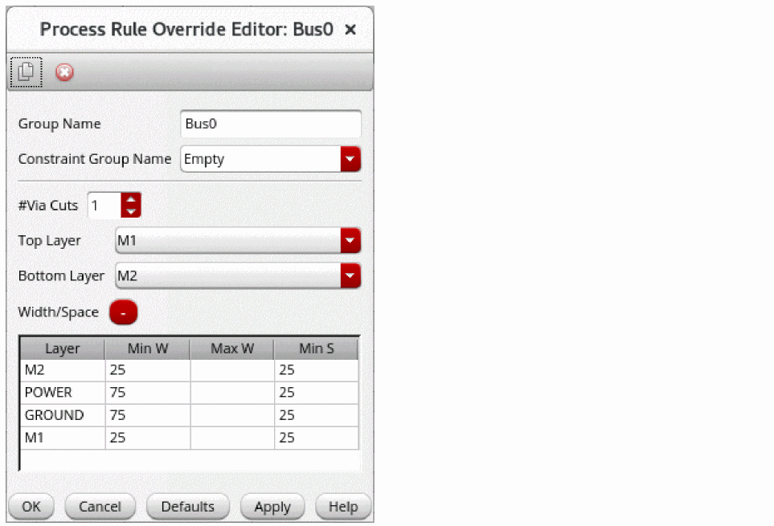

Creating a Bus Constraint and Routing the Buses
-
Choose Window – Assistants – Routing.
Alternatively, right-click anywhere on the layout window menu bar and choose Assistants – Routing.
The Routing assistant is displayed. - Click Routing Constraint Manager on the Routing assistant toolbar.
- Select the net on which you want to add the bus constraint from the Net column in the Nets tab.
-
Click the Bus button on the Routing Constraint Manager toolbar. Alternatively, right-click and choose Create Constraint…– Bus.
The bus constraint is added to the selected nets. -
To adjust bus constraint created on the selected nets, double-click the bus constraint on a net.
The Process Rule Override Editor: Bus form appears.
 - Select top and bottom layers from the Top Layer and Bottom Layer fields, respectively.
- Repeat the previous steps to add a bus constraint on other nets.
- Click the Bus tab in the Routing Constraint Manager and select the available buses.
-
Right-click and choose Select All Bus Members.
All the nets in the available buses are selected. -
Click the Run signal router button in the Route tab of the Routing Assistant. Ensure that the routing type is selected as Chip.
You can see the bus routing result for all the nets.
Related Topics
Creating and Deleting a Constraint Group
Setting up a Constraint on a Net
Adding and Removing a Net from a Constraint Group
Process Rule Override Editor: Bus Form
Return to top